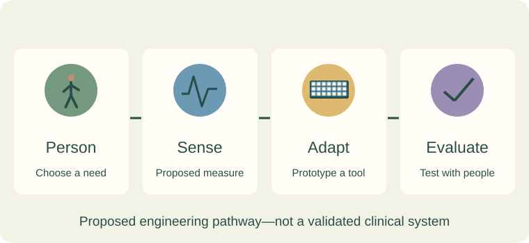
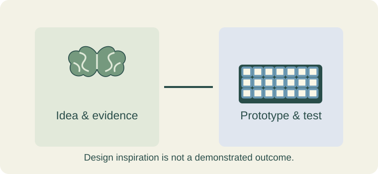
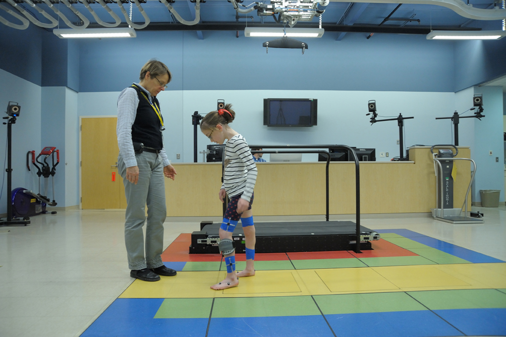
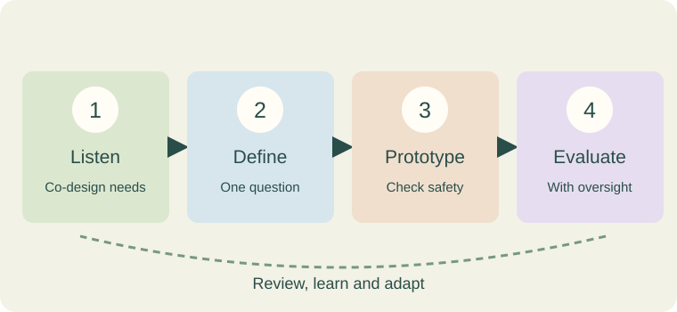

Understand the task.
Study how joint motion, muscle activity, tone, posture and fatigue interact. This would help me reason about a pen grip or lifting task instead of treating all CP movement as the same.
06 / LIVED EXPERIENCE → DESIGN QUESTIONS
Our purpose, lived experience and the biomedical engineering knowledge needed to develop this educational prototype responsibly.
AWARENESS · SELF-ACCEPTANCE · EVERYDAY POSSIBILITY
Erry Mobility is grounded in the belief that every person deserves dignity, belonging and opportunities to participate. It brings together cerebral palsy awareness, supportive reflection and an interest in biomedical engineering.
A world where movement is not a barrier to opportunity.
Erry Mobility uses accessible biomedical education to explore practical adaptations. Its strategic objectives guide future development and evaluation.
The optional journal supports personal reflection. See the scope and privacy limitations.

BIOMEDICAL ENGINEERING · ADMISSIONS & SCHOLARSHIP PROJECT
CURRENT STAGE: EDUCATIONAL WEB PROTOTYPEErry Mobility explores a question rooted in my life with cerebral palsy: how can everyday actions—typing, writing, creating and handling objects—become more accessible, comfortable and meaningful?
This project presents my motivation to study biomedical engineering. It is a starting point for learning and collaboration, not evidence that a website has improved a clinical condition.
WHY THIS PROJECT MATTERS TO ME
I live with CP and experience barriers in everyday movement and hand-based tasks. Those experiences led me to imagine a free space for awareness, adapted activities and reflection. A short message, a written word or an object moved with less effort can matter as much as a large movement.
I want biomedical engineering training to help me move from describing a difficulty to investigating it: understanding movement, choosing useful measurements, designing with people who will use the technology, and testing whether a proposed solution actually helps.
A scholarship would support my pursuit of that education and opportunities for supervised projects, laboratory learning and interdisciplinary mentorship. My ambition is to contribute to affordable assistive solutions while keeping disabled people’s priorities at the centre.

THE NEED → THE DESIGN RESPONSE
These are design responses to a lived-experience brief. They have not yet been validated through a participant study.
| Everyday difficulty | Working feature | Question still to investigate |
|---|---|---|
| Small keys, repeated presses or limited one-hand reach | Typing Setup Lab with a fixed sample, optional larger on-screen keys, elapsed time, and final text errors | Which key size, spacing and input method suit each user without adding effort? |
| Writing, drawing or manipulating small objects | Schematic 3D examples, written alternatives and a drawing pad with pointer and button access | How should grip tools, arm support and task geometry be adapted for a specific person? |
| Hard-to-see effort, fatigue and day-to-day variation | Optional self-reported mood, pain, fatigue, support and activity records | Which measures are meaningful and reliable enough for an agreed goal? |
| Moving a heavier object while maintaining support | A light rehearsal and equipment-planning education, with no prescribed weight | What loads, grasp, balance support and transfer aids are appropriate after assessment? |

WHY BIOMEDICAL ENGINEERING?
WHO includes CP in its neurological rehabilitation package and describes the importance of assistive products, equipment and trained services. That connection is central to this project: a tool has to fit a person, a task and an environment.
The photograph illustrates one area of engineering research. Erry Mobility currently has no stimulation hardware, sensors, motion analysis or therapeutic device integration.
WHO neurological rehabilitation package (2023) · WHO assistive technology fact sheet (2024).
THE SKILLS I WANT TO DEVELOP
Study how joint motion, muscle activity, tone, posture and fatigue interact. This would help me reason about a pen grip or lifting task instead of treating all CP movement as the same.
Explore whether motion sensors, instrumented keys or surface EMG could answer a specific question. Calibration, artefacts and interpretation would need supervision; none is implemented in this site.
Learn to co-design accessible controls, keyguards or grip adaptations with people with CP and therapists, including people who use switches, wheelchairs or communication aids.
Develop skills in materials, fabrication, mechanical and electrical safety, durability and cost. A comfortable digital model is not proof that a physical device is safe or useful.
Learn to choose suitable outcomes and analyse uncertainty. A future study could examine task completion with chosen support, accidental activations, comfort and effort—not simply faster performance.
Study privacy, accessible consent, secure data handling and low-cost or offline delivery. Device ownership, language and internet access can shape who benefits.
KMITL describes a hand-rehabilitation system that mirrors movements from the other hand for unilateral hand-movement impairment. This motivates questions about sensing, feedback and fitting.
The exhibition description does not establish effectiveness for CP. Erry Mobility has no affiliation, glove hardware or clinical result from this project.
KMITL’s original description (Thai) →Whittington and colleagues used Android sensors and APIs to identify actions and map them to assistive technologies. A usability evaluation included 18 pupils with varied conditions.
This is an access-design precedent, not proof of CP recovery or validity for Erry Mobility. Device variability and user diversity matter.
Paper and DOI: 10.1080/17483107.2020.1839135 →PROJECT SCOPE · CURRENT LIMITATIONS · FUTURE LEARNING
Erry Mobility is an educational design prototype informed by lived experience and selected published sources. Its completed work comprises educational content, interface development and functional checks. No participant study or clinical trial has been conducted.
The current scope is the design and development of a free digital resource for CP awareness, exploration of everyday adaptations and optional personal reflection. The proposed research scope is a small, clearly defined feasibility and usability investigation of an adaptation chosen with its intended users.
Evidence-linked CP education; simplified 3D anatomy and movement models; 12 tutorial guides with written alternatives; typing and drawing practice; and a browser-local journal with import and export. The engineering story documents design questions and learning priorities.
Diagnosis, individual treatment or device prescriptions, validated movement assessment, sensor or therapeutic hardware integration, and claims of improved clinical or emotional outcomes. The site does not provide counselling, emergency support or a moderated peer-support service.
PROPOSED STUDY · NOT CONDUCTED
For a user-selected typing task, how do perceived effort, comfort and unintended activations differ between the person’s usual setup and a chosen larger-key or repeat-filter setting?
Intended users, access methods, outcomes and a suitable comparison would be defined with people with CP and an occupational therapist. Participant research would require an appropriate protocol, oversight, accessible consent, rest options and a data-handling plan. Any findings would be limited to the participants, settings and tasks studied.
There are no participant outcomes or established treatment effects for Erry Mobility. Educational content and animations have not been clinically reviewed. Functional checks establish interface behaviour; improvements in mobility, self-esteem or wellbeing have not been evaluated.
The models illustrate selected structures and authored movements. They do not reproduce individual neuromuscular control, tissue forces, balance, equipment fit or safe loading. They cannot assess spasticity, dystonia, contracture, pain or a person’s capacity to perform a task.
Typing, drawing and journal entries are exploratory tools. They do not measure strength, pressure or neurological recovery. Mood, effort and symptoms are self-reported. Weight and BMI are optional context with interpretive limitations; they are not measures of personal worth or CP recovery.
Erry’s experience does not represent all people with CP. Participation across varied movement, sensory and communication needs, ages, languages and settings has not been studied. Layout and browser checks do not establish universal accessibility or compatibility with every device and assistive technology.
Entries are stored unencrypted in the current browser, without account-based synchronisation or a secure clinical-record system. Shared devices may expose entries. Clearing browser data, changing browser or changing domain can make records unavailable; users can export a backup and import it where supported.
The educational sources form a selected reference set, not a systematic review. External research precedents do not establish this site’s effectiveness. There is no laboratory validation, calibrated sensing system or long-term follow-up. Content, external links and device compatibility need ongoing review.
Biomedical engineering provides a framework for translating lived difficulties into carefully defined design questions, suitable prototypes and evidence that can be examined. For Erry Mobility, the next stage requires knowledge of the person, the task, the environment and the limits of any proposed measurement or device.
Work with people with CP to identify a meaningful task, preferred support, access needs and a realistic definition of usefulness.
Apply biomechanics, motor control and anatomy with clinical input to investigate joint motion, posture, muscle activity, fatigue and environmental demands.
Use human factors, materials and mechanical design to explore controls, keyguards, grips or support concepts. Physical devices would need supervised testing and, where appropriate, professional assessment and fitting.
Study instrumentation and signal processing before considering smartphone sensors or instrumented inputs. A sensor would be introduced only for a defined question, with calibration, uncertainty and data protection addressed. None is connected to this site.
Use inclusive study design, appropriate oversight and accessible consent to assess usability, effort, comfort and task performance. Report individual variation, limitations and negative findings alongside any observed benefit.
Biomedical engineering education would provide the scientific foundations, practical skills and supervised research experience needed to develop this prototype responsibly. Training in biomechanics, instrumentation, signal processing, materials, human factors and statistics would help Erry investigate assistive ideas, work with clinicians and users, and assess whether a proposed adaptation is useful in a defined setting.
Related frameworks: WHO assistive technology · WHO neurological rehabilitation package. Research precedents and the proposed roadmap provide further context.

PROPOSED NEXT STEPS · NOT COMPLETED RESEARCH
Invite people with varied CP experiences and therapists to review priorities, language, activity guidance and access barriers. Do not assume Erry’s experience represents everyone.
For example: could a chosen keyboard layout reduce unintended activations without increasing fatigue? Define the intended users, comparison and meaningful outcome before testing.
Use supervised engineering work to explore the interface or assistive component. Plan accessibility, safety, calibration and data handling before involving participants.
Seek applicable ethics and clinical guidance, accessible consent and a suitable study design. Report limitations, negative findings and uncertainty alongside any benefit.
Use findings to revise the tool, explore affordability and offline access, and review educational sources regularly.
Vision and lived-experience brief: Erry. Implementation and draft content: AI-assisted. Project status: publicly available educational prototype. Clinical review and participant evaluation are proposed next steps. WHO resources inform the content; WHO does not endorse this project.
The awareness section links to WHO, CDC, NHS, NICE, AACPDM and research papers. Statistics retain their dates and populations. Wikipedia is linked for broad background and history, with primary and healthcare sources used for the main clinical and numerical claims.
Updated 12 November 2026. The roadmap describes learning ambitions and proposed work. The project can support an application by showing motivation, a working prototype and honest reflection on its limits.
Return to Erry Mobility →